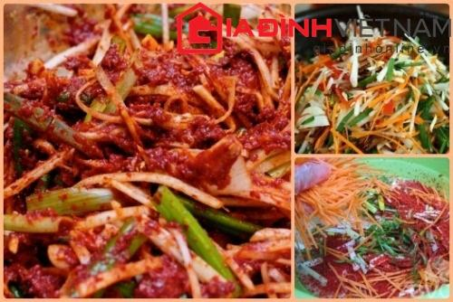

Cùng bắt tay làm thử thôi nào!
Cách làm kim chi Việt Nam đơn giản, không cần dùng đến gia vị Hàn Quốc. Hãy cùng bắt tay vào làm theo các bước dưới đây bạn nhé!
Để làm món kim chi Việt Nam bạn cần chuẩn bị những nguyên liệu sau:
1,5 kg cải thảo
3 củ cà rốt
5 quả dưa chuột
1 nắm hành lá
Ớt bột Hàn Quốc
Các gia vị khác như: Dấm, đường, bột canh, nước mắm ngon, muối biển.
Đầu tiên bạn rửa sạch cải thảo, tách từng lá ra và cắt theo chiều dọc. Lấy một chậu hoặc bát tô, cho cải thảo vào và rắc muối, ướp trong khoảng 4 tiếng.
Tiếp theo là bạn chuyển sang chế biến phần nguyên liệu để trộn với cải thảo. Sau khi đã rửa sạch cà rốt, dưa chuột, hành lá, bạn sẽ đem thái nhỏ. Với cà rốt, dưa chuột thái chỉ dọc, với hành lá thái khúc dài khoảng 3 - 5 cm.
Bạn bóc gói ớt bột Hàn Quốc, đem trộn với phần nguyên liệu vừa thái. Cho thêm cả dấm, đường, nêm nước mắm, gia vị vừa miệng thì thôi. Nếu muốn màu kim chi lên đẹp mắt, bạn có thể cho thêm chút tương ớt rải lên. Bạn bóp đều hỗn hợp trên và để ngấm khoảng 2 tiếng.
Cải thảo sau khi rắc muối 4 tiếng giũ sạch muối bằng cách xối nước lạnh, xả nước sôi để nguội, vắt khô nước, để thật ráo.
Lấy một hộp đựng, cho từng lớp lá cả thảo vào, xếp xen kẽ hỗn hợp nguyên liệu để trộn với cải thảo. Đậy nắp hộp đựng vào, cứ để như thế khoảng 24 tiếng sau có thể mang ra ăn được. Để bảo quản kim chi, bạn có thể cho vào tủ lạnh sẽ giữ được khoảng 1 tháng.
Với cách làm đơn giản do báo điện tử Gia đình Việt Nam chia sẻ trên đây, hi vọng các bạn sẽ thực hiện thành công món kim chi Việt Nam ngon miệng, bắt mắt ngay tại nhà mình.
Chúc các bạn thành công!